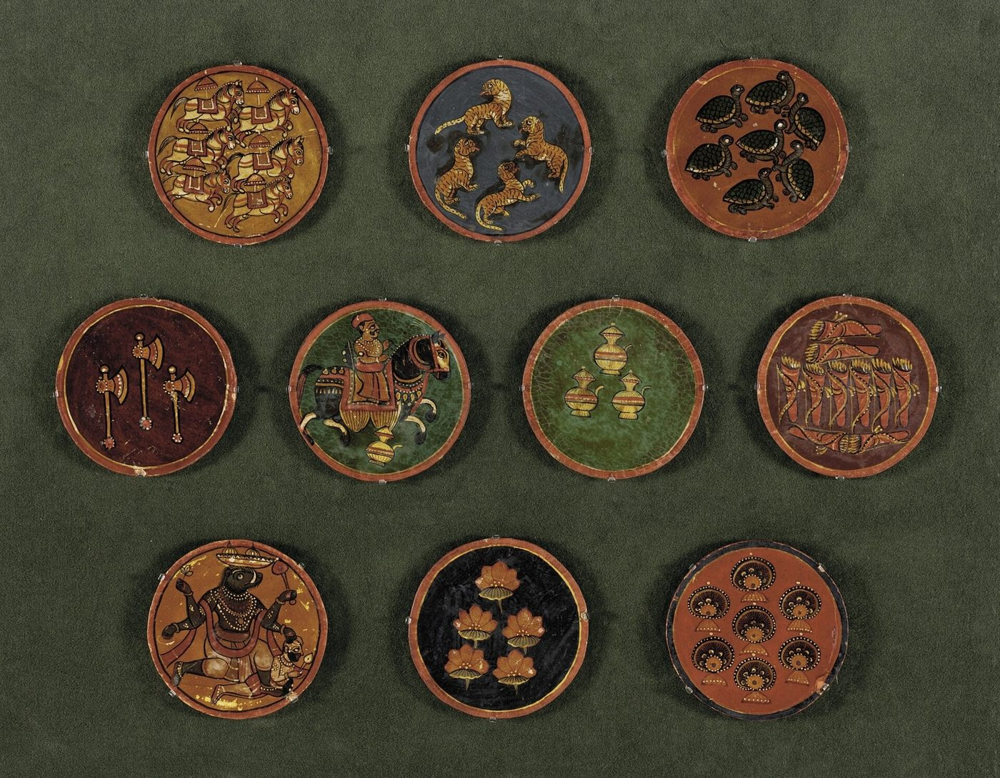

Chapter 11: Citra and Utsava: Painting, the Book, Festival Crafts and Games¶
Painting in India was practised on many surfaces: the walls of caves, temples, palaces and houses; palm leaves and paper; cloth, wood, leather and the human body. Histories of Indian art usually treat painting as a fine art, and focus on the great cycles of Ajanta and the miniatures of the Mughal and Rajput courts. This chapter looks at painting as a craft: at the organisation of painters’ workshops and families, at their materials, pigments and methods, at the making of books, which joined painters to scribes, paper-makers and binders, and at the wide range of painted things, from scrolls carried by storytellers to pictures sold to pilgrims. It then turns to the crafts of celebration and play. Festivals require images, lamps, decorations and effigies; games require boards, pieces and cards; children’s play requires toys; and performance requires masks, puppets and costumes. Many of these things are ephemeral, made to be used for a season and then immersed, burned or discarded, and they are made by a wide range of people, from hereditary potters and painters to householders and children. Painted and printed textiles are described in Chapter 5.
11.1 Painters and Their Workshops¶
Painting (citra, ālekhya) is one of the sixty-four arts of the Kāmasūtra, and courtly literature often shows princes and princesses painting portraits of absent lovers. Its learned theory, set out in the Citrasūtra of the Viṣṇudharmottara Purāṇa (Kramrisch 1928) and in the six limbs of painting (Chapter 1), and the history of the great mural, manuscript and court traditions, from Ajanta to the Mughal, Deccani, Rajput and Pahāṛī schools, are treated in Volume 16 of this series. The texts were written for connoisseurs and patrons as much as for painters. The painters themselves appear in other sources as hereditary craftsmen, usually of modest rank, working in families and workshops.
The best-documented workshop is the imperial library-workshop (kitābkhāna) of the Mughal emperor Akbar (r. 1556–1605), which employed scores of painters, calligraphers, gilders and binders. Persian masters trained Indian painters, many of them from Hindu artisan families. Paintings were often the work of several hands: one artist designed the composition, another painted it, another did the faces. Abu’l Fazl names many of the painters, among them Daswanth and Basawan, and inscriptions on the paintings record their names (Abu’l Fazl 1873; Beach 1992).
At the Rajput and hill courts painting was a family occupation. B. N. Goswamy’s study of Nainsukh of Guler (c. 1710–1778) and his family showed how a lineage of painters, the descendants of Paṇḍit Seu, moved between the small hill courts of the western Himalaya, transmitting styles, drawings and techniques from father to son and between brothers (Goswamy 1997). Painters kept stocks of drawings and tracings (charbā) made by pouncing, through which compositions passed from generation to generation. Their names were seldom recorded on the paintings themselves; genealogical records kept by priests at pilgrimage centres such as Haridwar have helped to identify them.
In the late eighteenth and nineteenth centuries, Indian painters at Patna, Murshidabad, Lucknow, Delhi, Thanjavur and other cities worked for British patrons, producing paintings of Indian trades, castes, festivals and costumes in a style adapted to European taste, known as “Company painting”. Sets of paintings of artisans at work, made for European buyers, are themselves a valuable source for the history of crafts, though they present crafts through the categories of the colonial observer.
11.2 The Painter’s Materials and Methods¶
Painters of manuscripts and miniatures worked on sheets of paper made thick and smooth by pasting several layers together and burnishing them with a stone. They drew first with a brush in a light colour, corrected the drawing, and then laid on a thin white priming. Colours, ground on a stone slab and mixed with gum, were applied in successive layers, each burnished from the back to make the surface smooth and brilliant. Gold was applied as shell gold (gold leaf ground with gum) and burnished to a shine; beetle-wing cases were sometimes used for the green of jewels. Brushes were made of squirrel or kitten hair set in quills, the finest having only a few hairs. Painters learned to make their own colours and brushes as part of their apprenticeship.
Painting on cloth required a different preparation: the cloth was sized with starch or gum, often coated with chalk and burnished, as in Odisha paṭṭacitra, while the large paṛ scrolls of Rajasthan were painted on starched coarse cotton with mineral colours. Murals required the preparation of plaster and, in some traditions, painting on wet lime.
11.2.1 Pigments¶
Whether they worked on palm leaf, paper, cloth or walls, Indian painters used mineral and organic pigments bound with gum or glue. The common palette included:
-
black from lamp-soot (kajjala);
-
white from chalk, kaolin or lead white;
-
red ochre, vermilion (hiṅgula, mercury sulphide, natural or made by combining mercury and sulphur) and red lead;
-
yellow ochre and orpiment (haritāla, arsenic sulphide);
-
green from terre verte or from mixing orpiment and indigo;
-
blue from indigo and from ultramarine made from lapis lazuli, imported from Badakhshan;
-
gold and silver applied as leaf or ground into paint.
“Indian yellow” (peorī), a bright yellow used in Mughal and Rajput painting, was reported in 1883 by T. N. Mukharji to be made at Monghyr in Bihar from the urine of cows fed on mango leaves (Mukharji 1883). The report was long doubted, but the main colouring matter of the pigment, a salt of euxanthic acid, is an animal metabolite consistent with his account; the practice has long since ceased.
Health and Safety Note
Several traditional pigments are poisonous. Orpiment contains arsenic; vermilion contains mercury; red lead and lead white contain lead. Grinding, mixing and using them without precautions can cause serious poisoning, and they should never be ingested or applied to the skin. Vermilion and sindūr powders sold today may also be contaminated with lead.
11.3 The Arts of the Book¶
Painters shared the making of books with scribes, paper-makers, illuminators and binders. The book was itself a craft object, and its materials changed over time from leaf and bark to paper.
11.3.1 Palm Leaf and Birch Bark¶
Before paper, the main writing materials of India were palm leaf and, in the north-west, birch bark. Palm leaves (of the talipot or palmyra palm) were cut to size, boiled or soaked, dried and polished. In the north they were written on with ink and a reed pen; in the south and Odisha the letters were incised with a metal stylus and then rubbed with lamp-black mixed with oil, which filled the incisions and was wiped from the surface. The leaves were pierced with one or two holes, strung on cords and protected between wooden boards, which were often painted. Birch bark (bhūrjapatra) was split into thin sheets and written on with ink; many of the oldest surviving Indian manuscripts, including Buddhist texts from Gandhāra, are on birch bark. In Assam the Vaiṣṇava monasteries wrote on the prepared bark of the agaru tree (Chapter 12). Writing ink (masī) was usually made from lamp-black or charcoal with gum and water. Carbon inks are very stable, which is one reason why so many Indian manuscripts remain legible. Manuscripts were protected by wrapping in cloth and with insect-repellent substances, but they were usually recopied every few generations, and the survival of a text depended on the continuous work of scribes.
11.3.2 Paper¶
Paper was invented in China and reached India through the Islamic world. It came into use in India in the early second millennium CE, and Irfan Habib’s survey of medieval technology connects its spread with the Delhi Sultanate (Habib 2008). In Gujarat and western India, Jain manuscripts on paper become common from the thirteenth century, gradually replacing palm leaf, which remained the usual writing material in the south until the nineteenth century. Paper was made from rags and fibres, beaten to a pulp, lifted on a screen of fine bamboo strips, pressed and dried, and burnished with a stone to give a smooth writing surface. Important centres included Sialkot, Kalpi, Daulatabad, Ahmedabad and Sanganer.
The papermakers (kāghazī) of Sanganer near Jaipur, who are said to have settled there under the patronage of the Jaipur court, still make handmade paper, now mainly from cotton rags and for export and stationery. Hand-made paper was promoted by the Khadi and Village Industries Commission after independence, and the Kalpi papermakers continue as a cluster. In Arunachal Pradesh the Monpa people make paper from the bark of a local shrub (Daphne), used for Buddhist texts.
11.3.3 Calligraphy, Illumination and Binding¶
With paper came the Persian-style codex and a cluster of crafts that the Indo-Islamic courts held in very high esteem. In the Islamic tradition the copying of the Qurʾān was a pious act, and calligraphy (khushnavīsī) was ranked above painting. The Sultanate period developed a distinctive Indian script for the Qurʾān, known as bihārī, with heavy, flat letter-forms; under the Mughals the flowing nastaʿlīq became the favoured hand for Persian poetry and history. Abu’l Fazl’s account of Akbar’s library-workshop treats calligraphy before painting, names the leading scribes, and records that Akbar honoured Muḥammad Ḥusain of Kashmir with the title zarrīn qalam, “golden pen” (Abu’l Fazl 1873). Calligraphers were often men of learning and good family, and many signed their work; the painters who illustrated the same manuscripts were usually of humbler origin and signed only occasionally.
A fine manuscript passed through many hands (Losty 1982). Paper-makers supplied sheets that were dyed, sized with starch and burnished with an agate or a smooth stone until the pen glided over them; the scribe ruled the page with a frame of strings pressed into the paper (misṭar) and wrote with a reed pen cut to a slant; the illuminator (muzahhib) painted the headpieces, rulings and floral borders in gold and colours; the margins (ḥāshiya) of albums were sometimes of separately coloured, gold-sprinkled or marbled paper (abrī), a technique practised especially in the Deccan; and the binder (ṣaḥḥāf) sewed the gatherings and made covers of stamped, tooled and gilded leather (Chapter 9) or, from the eighteenth century, of painted and lacquered pasteboard. The lacquered pen-boxes (qalamdān) and book-covers made for scribes gave Kashmiri papier-mâché its old name, kār-i qalamdānī, “pen-box work”.
The same period saw a great expansion of Jain manuscript production in western India. Jain merchants and monks commissioned copies of the Kalpasūtra and other canonical texts, first on palm leaf and then, increasingly from the thirteenth and fourteenth centuries, on paper, illustrated in the western Indian style with gold and lapis blue; the temple libraries (bhaṇḍāra) of Patan, Jaisalmer and Cambay preserved them in large numbers. Hindu households and temples, too, kept illustrated manuscripts of the Bhāgavata Purāṇa, the Gītagovinda and devotional texts. Behind all these books stood scribes, paper-makers, illuminators and binders, most of them anonymous. Printing, which spread in India in the nineteenth century, brought most of their crafts to an end, though calligraphers continued to write lithographed Urdu books and newspapers into the late twentieth century.
11.4 Painted Scrolls and Storytelling¶
Some of the most remarkable Indian paintings were made to be used in performance. Itinerant painter-storytellers unrolled painted scrolls while singing the stories depicted on them, and performers carried painted boxes and cloths from village to village. In Rajasthan the Joshī families of Shahpura and Bhilwara paint the paṛ, a horizontal cloth several metres long, with the epics of the folk deities Pābūjī and Devnārāyaṇ; the Bhopā priest-singer and his wife perform the epic at night in front of the unrolled cloth, which serves as a portable temple. The carpenters of Bassi near Chittorgarh make the kāvaḍ, a portable wooden shrine with hinged painted panels, which the storyteller opens one by one as he narrates.
In Bengal the Paṭuā or Citrakar painters make vertical scrolls (paṭ) and sing the stories as they unroll them: episodes from the epics and the Kṛṣṇa legend, the goddess Manasā, the Muslim saint Satya Pīr, and in recent decades contemporary themes such as floods, epidemics, the tsunami of 2004 and social campaigns. Many Paṭuās are Muslims who paint and sing Hindu stories, and they have long lived between the two communities. In Telangana the Nakāśī family of Cheriyal paints long cloth scrolls for the genealogists and storytellers of particular castes, narrating the mythical origins of those castes. The leather shadow puppets of Andhra Pradesh, Karnataka and Kerala belong to the same world of travelling performance (Chapter 9).
These traditions joined painting to song and made it a form of public knowledge and memory. Their audiences were often villagers, pastoralists and lower-caste communities, for whom the painted cloth brought the god and the story to the village. They were not, however, an art only of those excluded from texts and temples: the same painters worked for landholders and patrons of high rank, and the temple painting described next served pilgrims of every class.
11.5 Painting for Temples and Pilgrims¶
Temples and pilgrimage centres sustained large communities of painters. At Nathdwara in Rajasthan, the seat of the Puṣṭimārga image of Śrīnāthjī, painters make the large painted cloth hangings (picchavāī) hung behind the image according to the festival calendar, as well as small paintings and prints for pilgrims. At Puri, the Citrakāra painters of Raghurajpur and other villages paint the images of Jagannātha, Balabhadra and Subhadrā and the paṭṭacitra pictures sold to pilgrims (Chapter 12). At the Kālīghāṭ temple in Calcutta, Paṭuā painters in the nineteenth century developed a new style of quick watercolour paintings on mill-made paper, with bold outlines and broad washes, depicting deities, scenes from the epics, and satirical images of the new urban society of Calcutta: the dandy, the courtesan, the hypocritical priest. Kalighat paintings were cheap souvenirs; they are now valued as one of the sources of modern Indian art (Jain 1999). Popular prints made with lithographic and oleographic presses, such as those of the Ravi Varma Press founded in 1894, eventually displaced much of this hand-painted production.
11.6 Painting on the Wall and the Floor¶
Much Indian painting is done by women on the walls and floors of houses, for festivals, marriages and rituals, and is renewed again and again. The Mithilā paintings of Bihar, the Warli paintings of Maharashtra, the sohrāy and khovar paintings of Jharkhand, the māṇḍaṇā of Rajasthan, the ālpanā of Bengal and the kōlam of the south (Chapter 12) belong to this category. These are not “folk” versions of a higher art, but distinct traditions with their own techniques, meanings and transmission from mother to daughter. Many of them have been transferred to paper and canvas for sale since the 1960s and 1970s, and some of their practitioners have become known as individual artists. Kramrisch’s Unknown India was one of the first exhibitions to present such work as art (Kramrisch 1968).
11.7 Painters in Society¶
Painters in India were generally members of hereditary communities: the Citrakāras of Odisha and Bengal, the Joshīs and Cītārās of Rajasthan and Gujarat, the Nakāśīs of the Deccan, the Muslim and Hindu painters of the Mughal and Rajput courts, the Paṭuās of Bengal. Painters were usually of modest standing, though a successful court painter could become wealthy and respected. Many painting communities included both Hindus and Muslims, or Muslims who painted Hindu subjects; the boundaries between religions were less important in the workshop than in later communal politics.
In the colonial period, art schools trained a new kind of artist, educated in European academic methods, and the distinction between the “artist” and the hereditary painter-craftsman hardened. Partha Mitter has traced how Indian artists and critics in the late nineteenth and early twentieth centuries negotiated between academic naturalism, nationalist revival of “Indian” styles, and the traditions of the bazaar painters (Mitter 1994). The modern recognition of Mithilā, Warli, Gond and Paṭuā painters as artists partly reverses this hierarchy, though questions of authorship, market and authenticity remain (Chapter 15).
11.8 Santiniketan and the Craft Revival¶
In the early twentieth century, artists associated with the nationalist “Bengal school”, such as Abanindranath Tagore and Nandalal Bose, turned to Indian painting traditions, including Ajanta, Mughal and Rajput painting and folk art, for inspiration. At Santiniketan, where Rabindranath Tagore founded the art school Kala Bhavana in 1919, which became part of the university of Visva-Bharati when that was constituted in 1921, students learned painting alongside crafts such as batik, leatherwork, weaving and woodwork, and the nearby rural reconstruction centre of Sriniketan (1922) taught crafts to villagers as a means of livelihood. Nandalal Bose designed the posters for the Haripura session of the Indian National Congress in 1938 in a folk-inspired style and later illustrated the Constitution of India. These experiments helped to bridge the gap between “art” and “craft” that colonial institutions had opened, and they anticipated the post-independence craft revival (Mitter 1994).
11.9 Games and Their Equipment¶
11.9.1 Chess¶
Indian craftsmen made the boards, pieces, dice and cards of many games, and the games themselves carried ideas across religions and continents (Topsfield 2006). The game of chess probably developed in India by about the sixth century CE, from a game called caturaṅga, “four-limbed”, after the four divisions of an ancient army: elephants, horses, chariots and foot-soldiers. The game travelled to Iran, where it was known as chatrang and later shaṭranj, and from the Islamic world to Europe (Murray 1913). Indian craftsmen made chessmen of ivory, wood, stone and metal, and chessboards, often embroidered or inlaid, were among the luxury goods of Indian courts. Chess sets carved for European buyers in the eighteenth and nineteenth centuries, with the armies of the East India Company opposing those of Indian rulers, are among the curiosities of colonial craft.
11.9.2 Pachīsī and Caupaṛ¶
The race games of pachīsī and caupaṛ, played on a cross-shaped board with pieces moved according to throws of cowrie shells or long dice, were popular across India. Their boards were usually made of cloth, embroidered or appliquéd, so that they could be folded and carried. A large pavement board for the game is laid out in the courtyard of Akbar’s palace at Fatehpur Sikri, where, according to tradition, the emperor played with living pieces. The game of dice is also central to the Mahābhārata, in which Yudhiṣṭhira loses his kingdom at dice.
11.9.3 Gañjīfā¶
Gañjīfā is a game of circular playing cards (Figure 11.1), introduced from Iran in the Mughal period. The Mughal pack had eight suits; Indian painters created new packs with ten suits based on the ten incarnations of Viṣṇu (daśāvatāra gañjīfā) and other themes. The cards were painted by hand on layers of paper or cloth stiffened with lac or gum, or on ivory or tortoise-shell for the rich. Sawantwadi in Maharashtra, Puri and other centres in Odisha, and Mysore were important centres; the craft survives in a few families, mainly for collectors.

_LACMA_M.2001.210.4.1-.10.jpg){kind=link}
11.9.4 Gyān Caupaṛ: The Game of Knowledge¶
The game known in Hindi as gyān caupaṛ and in other forms as mokṣapaṭ or paramapada sopānam, in which players move up ladders of virtue and down snakes of vice towards liberation, was played in many religious traditions, with Jain, Hindu, Sufi and other versions of the board. The boards were painted on cloth or paper, with numbered squares named after virtues, vices, states of being and heavens and hells, and were used as a form of moral instruction as well as entertainment. In the late nineteenth century the game was taken to Britain, where it was secularised and became “Snakes and Ladders”.
11.10 Toys and Dolls¶
Toys are made in every material: clay, wood, cloth, paper, palm leaf, lac, metal and pith. Some of the best-known wooden toy traditions are described in Chapter 7, clay toys and figures in Chapter 6. Several other traditions deserve mention:
- Navarātri dolls
- In Tamil Nadu, Karnataka and Andhra Pradesh, households set up a display of dolls on stepped shelves during the autumn festival of Navarātri (kolu or golu, bombe habba), including deities, scenes from the epics, village life and new figures added each year. The display sustains a large seasonal industry of clay, papier-mâché and wooden dolls. The Thanjavur “dancing dolls” with nodding heads and the roly-poly dolls that right themselves when pushed are well-known types.
- Cloth dolls and puppets
- Women make cloth dolls for their children and for festivals in many regions. In Rajasthan, the string puppets (kaṭhputlī) of the Bhāṭ community, with carved and painted wooden heads and long cloth skirts, are used to perform the stories of heroes such as Amar Singh Rāṭhoṛ.
- Paper and papier-mâché
- Papier-mâché toys, masks and boxes are made in Kashmir, Rajasthan, Odisha and Bengal, from paper pulp or layers of pasted paper over moulds, and painted.
- Metal toys
- Small brass and bell-metal toys, such as miniature cooking sets, were made for children, especially girls, in many regions.
Toys are evidence of how societies imagined childhood and work: the miniature cooking sets given to girls, the carts, soldiers and animals given to boys, and the dolls used to rehearse weddings all teach social roles.
11.11 Kites¶
Kite-flying is a popular pastime across much of India, and in Gujarat the festival of Uttarāyaṇ (Makar Saṅkrānti) in January is celebrated by kite-flying on a massive scale. Kites are made of thin paper on frames of split bamboo, and kite-makers in Ahmedabad, Khambhat, Jaipur, Lucknow and Bareilly produce them in huge numbers for the season. Kite-fighting, in which flyers try to cut each other’s strings, uses string coated with a paste of glue and powdered glass (māñjhā). Manufactured nylon and “Chinese” māñjhā, which does not break easily, has caused many injuries and deaths among people and birds, and its use has been banned by courts and authorities in several states and by the National Green Tribunal (2017).
11.12 Festival Images and Decorations¶
11.12.1 Images Made to Be Immersed¶
The clay images of Durgā in Bengal and of Gaṇeśa in Maharashtra and elsewhere, worshipped for some days and then immersed in water, are described in Chapter 6. Similar seasonal images are made for Sarasvatī, Lakṣmī, Kālī and Viśvakarma (Chapter 2) in eastern India, and for other deities elsewhere. The image-makers work for months before each festival, often on credit from the organising committees, and the decorations, crowns and ornaments of the images involve further crafts, such as the sola pith work of the Mālākārs (Chapter 8).
11.12.2 Effigies of Rāvaṇa¶
For the festival of Daśaharā in north India, enormous effigies of Rāvaṇa and his brothers, built of bamboo and paper and filled with fireworks, are burned at the end of the Rāmlīlā performances. Their makers, in Delhi and other cities, include Hindu and Muslim craftsmen who work for weeks to prepare them.
11.12.3 Tāziya¶
During Muharram, the Shia commemoration of the martyrdom of Ḥusain at Karbala, models of the tomb of Ḥusain called tāziya are carried in procession and then buried or immersed. They are made of bamboo, paper, tinsel, mica and cloth, sometimes on a very large scale, and in many towns of north India, such as Lucknow, their making is a craft of specialist families; in some places Hindus also make and carry tāziyas.
11.12.4 Lamps, Stars and Floor Designs¶
Dīpāvalī is celebrated with clay lamps (Chapter 6) and, in many places, with paper lanterns; Christians in Kerala and Goa hang paper stars and build cribs at Christmas; in Kerala the harvest festival of Oṇam is celebrated with floral floor designs (pūkkaḷam); and women across India draw raṅgōlī, kōlam, ālpanā and māṇḍaṇā on floors and thresholds (above).
11.12.5 Fireworks¶
Fireworks are used at Dīpāvalī, weddings, temple festivals and many other celebrations. Their manufacture, once a small-scale craft, is now concentrated in Sivakasi in Tamil Nadu, which also produces matches and printed material. The industry has a long history of dangerous working conditions, fatal explosions and, in the past, extensive child labour, which have been the subject of court cases and regulation.
Health and Safety Note
Some festival materials are hazardous. Synthetic colours sold for Holī have been found to contain toxic dyes and heavy metals, and can cause skin, eye and respiratory injury; vermilion and other powders may contain lead. Plaster of Paris images and synthetic paints pollute rivers and lakes when immersed, and fireworks injure many people every year. Natural colours and clay images are safer alternatives.
11.13 Weddings¶
Weddings are the largest single market for many Indian crafts. A wedding may require new saris and other clothes for the bride, groom and relatives, often of a regional type with particular colours and techniques (the red Banarasi sari of north India, the paiṭhaṇī of Maharashtra, the gharcoḷā and paṭolā of Gujarat, the Kāñcīpuram silk of Tamil Nadu); jewellery, much of it given to the bride as her own property; brass and copper vessels; decorated wedding chambers and pavilions; painted pots; sola-pith crowns in Bengal; and printed or painted invitation cards. Women decorate the bride’s hands and feet with henna (mehndī) in intricate patterns, an art practised both by family members and by professional henna artists. The wedding gifts of embroidery and quilts made by women of the bride’s family, such as the phulkārī of Punjab and the embroidered dowry textiles of Kutch, were once among the most important occasions for women’s craft (Chapter 12). Changes in wedding customs, such as the shift to machine-made saris and jewellery, therefore affect the livelihoods of many craftspeople.
11.14 Masks and Costumes¶
Masks are used in many Indian performance and ritual traditions, and their making is a specialised craft. The Chhau dance of Purulia in West Bengal uses large painted masks of papier-mâché and clay, with elaborate headdresses, made by craftsmen of the village of Charida and others, while Seraikela Chhau in Jharkhand uses smaller, more stylised masks; Chhau dance was inscribed by UNESCO on the Representative List of the Intangible Cultural Heritage of Humanity in 2010. In the Vaiṣṇava monasteries (satras) of Majuli in Assam, monks make masks of bamboo, clay and cloth for the dramatic performances (bhāonā) founded by the saint Śaṅkaradeva, including large masks of demons and the man-lion Narasiṃha. At the Samaguri satra, the best-known centre, a frame of split bamboo is covered with strips of cloth soaked in clay, smoothed, dried and painted. The masks range from face masks to figures large enough to cover the whole body of the performer, and some have movable jaws. In the Buddhist monasteries of Ladakh, Sikkim and Arunachal Pradesh, masks of papier-mâché and wood are kept for the masked dances (cham) performed at festivals.
Kerala’s performers wear costumes that are themselves assemblages of crafts. The headdresses, ornaments and skirts of Kathakaḷi dancers are made of carved light wood, cloth, glass, beetle-wings and paint by specialised craftsmen, and their make-up is applied by specialists in a process taking hours. The ritual performers of Theyyam in northern Kerala wear towering headdresses and costumes of palm leaves, areca sheath, cloth and metal, made anew for each performance.
11.15 Ephemeral Craft¶
Much of the festival craft described in this chapter is ephemeral: the image is immersed, the effigy burned, the kite lost, the floor-design swept away. Its value lies in the making and the use, not in the survival of the object. A history of Indian crafts written from museum collections, which preserve durable and precious objects, therefore leaves out much of what craftspeople made. Ephemeral crafts employ very large numbers of people, often seasonally, and they sustain skills, such as modelling, painting and the working of bamboo and paper, that are used in other crafts as well.
The seasonal rhythm of festival crafts also shapes the lives of their makers. Image-makers, kite-makers, lamp-makers and toy-makers work intensively for a few weeks or months, often on borrowed money, and depend on selling their whole stock before the festival; a rainy season, a change in fashion or a ban on a material can ruin them. Their skills are passed on within families, and many combine festival work with other crafts or with agricultural and wage labour for the rest of the year.
Further Reading¶
For the Citrasūtra, Kramrisch (1928); for Mughal and Rajput painting, Beach (1992); for a family of hill painters, Goswamy (1997); for Kalighat, Jain (1999); for art in colonial India, Mitter (1994); for ritual and village painting, Kramrisch (1968); for regional toys, masks and festival crafts, Ranjan and Ranjan (2007); for the arts of the book, Losty (1982); for board and card games, Topsfield (2006), and for the history of chess, Murray (1913).